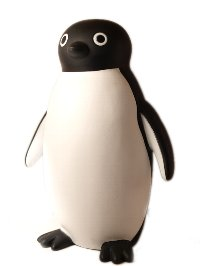
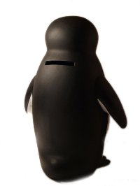
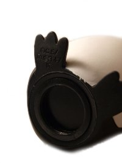
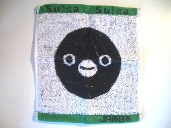
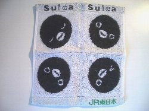
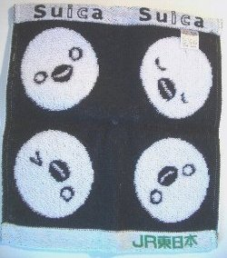

|
collection |
SuicaのペンギンSuicaペンギン貯金箱（2008年入手） シンプルかつかわいい。   Suicaペンギンのタオル（2008年入手） かなりしっかりした作りのタオルです。使うのが勿体ないな。  Suicaペンギンのタオルその2。いろんな表情がかわいい！ 裏側は・・・？ 
うっ、怖い・・・こわいようおかあさーん！！
関西ではＣＭは観られないのですが、実家に帰ったときにテレビで 最終更新 2009.03.01
2008-2009 |